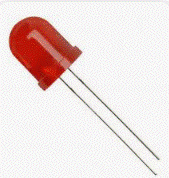
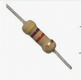
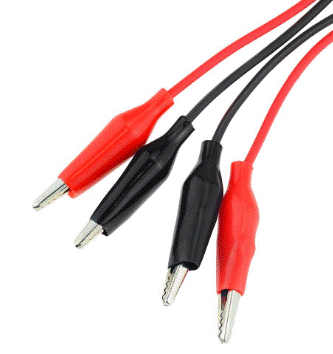
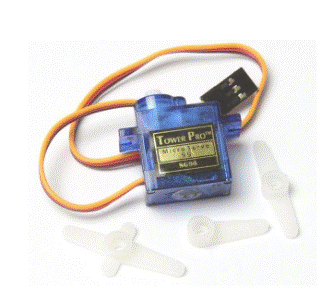

Además de la microbit y un ordenador para programarla...
Para las luces necesitamos los siguientes materiales:
- Un trozo de cartón (¡No hay nada malo en reciclar!)
- Dos LED rojos, preferiblemente de 5 mm con luz difusa y conectores largos

- Una resistencia que coincide aproximadamente con los LED a 3 voltios

- Pinzas de cocodrilo

- Pegamento
- Cinta
Para la barrera necesitas:
- Un servo SG90 9g, equipado con pinzas de cocodrilo

- Una pajita (preferiblemente blanca)
- Algunos materiales para la decoración.